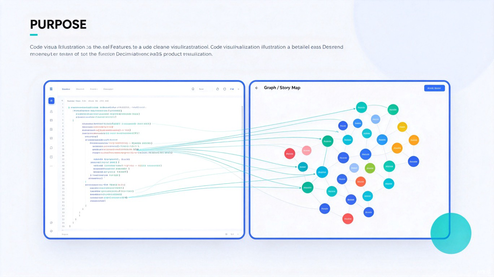

AI 代码故事化阅读器 —— 让代码像小说一样好读
CodeNarrator 是一款基于 TRAE AI 能力打造的代码理解工具。它突破传统代码阅读方式，将复杂的代码库自动转化为交互式的「代码故事地图」——就像阅读一本情节连贯的小说，开发者可以沿着逻辑脉络轻松探索项目结构。
通过 AI 深度分析代码结构、函数调用关系与数据流向，CodeNarrator 为每个项目生成独特的「叙事视图」，让晦涩的代码变得生动、可读、可探索。

AI 自动解析项目架构，将文件依赖、函数调用、数据流转化为可视化的叙事分支图，一键看清项目「剧情大纲」。
不仅自动生成函数级注释，更能用自然语言解释「这段代码在做什么」以及「为什么这样做」，如同资深导师在旁讲解。
支持点击任意函数或变量，追踪其完整生命周期——从定义、流转到消费，像跟随小说角色的命运线一样理解代码逻辑。
为初学者提供「章节式」阅读体验：从主入口开始，按逻辑层次逐步展开，不再被海量代码文件淹没。
面对 GitHub 上数万行的开源项目，不知从何入手。README 往往笼统，代码注释稀缺，「读代码」成为纸上谈兵。
熟悉公司代码库平均需要 2–4 周。期间大量时间花在「找文件、理清关系、猜意图」上，而非真正创造价值。
想为喜欢的项目做贡献，但 issue 列表看不懂，PR 不知从何改起。高门槛让大量潜在贡献者望而却步。
讲解代码时，学生难以在文件间建立关联。传统的线性代码展示无法传达「整体架构思维」。